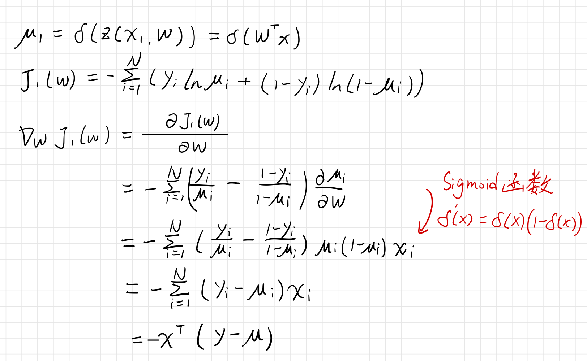

逻辑回归模型
逻辑回归（Logistic Regression)这个名字有一点奇怪，说是回归，其实还是用于分类。
在线性回归模型中，模型得到输入的线性组合$z(x,w)=w^Tx$，逻辑回归模型通过sigmoid函数$\sigma(.)$，将$z(x,w)$压缩到$[0,1]$区间，这个值可以解释为概率:
$$
p(y=1|x,w)=\sigma(w^Tx)
$$
下图展示了线性回归与逻辑回归的区别：

在伯努利分布中，$y\sim Bernoulli(\mu)$,其中$\mu$表示$y=1$的概率。则概率密度函数为:
$$
p(y; \mu) = \mu^y(1-\mu)^{(1-y)}
$$
在对数几率回归模型中，
$$
p(y=1|x)=\mu(x) = \sigma(w^Tx)\
p(y=0|x)=1-\mu(x) = 1-\sigma(w^Tx)
$$
定义一个事件的几率(odds)为该事件发生的概率与不发生概率的比值：
$$
\frac{p(y=1|x)}{p(y=0|\lambda)}=\frac{\sigma\bigl(w^{\mathrm{T}}x\bigr)}{1-\sigma\bigl(w^{\mathrm{T}}x\bigr)}=\frac{1/\bigl(1+e^{-w^{\mathrm{T}}x}\bigr)}{e^{-w^{\mathrm{T}}x}/\bigl(1+e^{-w^{\mathrm{T}}x}\bigr)}=e^{w^{\mathrm{T}}x}
$$
等式两边同时取对数，得到对数几率：
$$
ln\frac{p(y=1|x)}{p(y=0|x)}=ln(e^{w^Tx})= w^{T}x
$$
使用对数几率回归模型进行分类，当$p(y=1|x)\gt p(y=0|x)$，类别取$y=1$；当$p(y=1|x)\lt p(y=0|x)$，类别取$y=0$。由此，分类的决策边界为$w^Tx=0$。
损失函数
目标函数包含两部分：训练集损失和正则项。目标函数形式为：
$$
J(w,\lambda)=\sum_{i=1}^{N}\mathcal{L}(\mu_{i},y_{i})+\lambda R(w)
$$
训练集损失
log似然函数（似然函数可以理解为观察样本后得到的真实参数值的分布函数，详见如何理解似然函数? - HiTao的回答 - 知乎）：
$$
\begin{array}{r l}\ell(\mu)=\ln p(D)&=\sum_{i=1}^{N}\ln p(y_{i}|x_{i})\
&=\sum_{i=1}^{N}\ln(\mu(x_{i})^{y_{i}}(1-\mu(x_{i}))^{(1-y_{0})})\end{array}
$$
定义负log似然损失，也被称为交叉熵损失：
$$
L(y,\mu(x))=-y\ln(\mu(x))-(1-y)\ln{\big(}1-\mu(x){\big)}
$$
故极大似然估计等价于最小训练集上的负log似然损失。
正则项
线性回归模型可以不加正则项，但是逻辑回归必须有正则项。正则项用于惩罚模型的复杂度，一般可选择$L2$正则$\frac{1}{2}|W|_2^2$，$L1$正则$|W|_1$， 以及$L1+L2$正则($\rho|w|_1+(1-\rho)||w||_2^2$）。
在对数几率回归中，当训练完全可分时，$\frac{p(y=1|x)}{p(y=0|x)}=\frac{1}{0}$，这要求$w^Tx\rightarrow+\infty$，从而导致模型权重无限大。
优化求解
梯度下降法
考虑$L2$正则后，梯度为：
$$
\nabla_{w}J=\nabla_{w}J_{1}(w)+\lambda w=X^{T}(\mu-y)+\lambda w
$$
牛顿法
假设函数$J(\theta)$在$\theta^{(t)}$处二阶可导，则对任意小的$\Delta \theta$，函数$J(\theta)$ 的二阶泰勒展开近似为:
$$
J{\big(}\theta^{(t)}+\Delta\theta{\big)}\approx J{\big(}\theta^{(t)}{\big)}+(\Delta\theta)^{\mathrm{T}}g+{\frac{1}{2}}(\Delta\theta)^{\mathrm{T}}H(\Delta\theta)
$$
其中，$g$为$J$对$\theta$的梯度，$H$为$J$对$\theta$的Hessian矩阵（关于Hessian矩阵可见chp8.pdf page20）。
$g=\nabla_{\theta}J={\frac{\partial J(\theta)}{\partial\theta}}$
$H=\nabla^{2}J={\frac{\partial^{2}J(\theta)}{\partial\theta\,\partial\theta^{\mathrm{T}}}}$
目标是找到最佳的$\Delta \theta$，使得$\Big((\Delta\theta)^{\mathrm{T}}g+\frac{1}{2}(\Delta\theta)^{\mathrm{T}}H(\Delta\theta)\Big)$最小，这个极小值可对该式求一阶导数令其等于０得到（具体的含义可见上面引用的文章谈谈常见的迭代优化方法）：
$$
\frac{\partial}{\partial(\Delta\theta)}\biggl((\Delta\theta)^{\mathrm{T}}g+\frac{1}{2}(\Delta\theta)^{\mathrm{T}} H(\Delta\theta)\biggr)=g+H(\Delta\theta)=0
$$
从而得：
$$
\Delta\theta=-H^{-1}\,g
$$
对比可以发现，$g$函数就是梯度下降法中推导的结构，牛顿法其实相当于用海森矩阵替换了梯度下降中的学习率，即
一阶梯度法：$d^{(t)}\,=-\eta g^{(t)}$
二阶牛顿法：${\cal d}^{(t)}\,=-(H^{(t)})^{-1}g^{(t)}$
牛顿法算法步骤：
- 初始化$x^{(0)}$
- 计算$g^(t)$和海森矩阵$H^{(t)}$
- 计算移动方向：${\cal d}^{(t)}\,=-(H^{(t)})^{-1}g^{(t)}$
- 更新$x$的值：${\cal d}^{(t)}\,=-(H^{(t)})^{-1}g^{(t)}$
- 判断是否满足中止条件，不满足则回到第二步。
优点：
相比梯度下降法，牛顿法收敛速度更快
缺点：
每一轮迭代需要计算海森矩阵的逆，计算量更大。且不能保证每一步迭代时函数值下降，不能保证一定收敛。
拟牛顿法
牛顿法计算复杂高且有时候目标函数的海森矩阵无法保持正定，不存在逆矩阵，故提出拟牛顿法。
拟牛顿法的思想：不计算海森矩阵或其逆矩阵，而是通过某种方式近似地表示海森矩阵。
经典的算法有BFGS、L-BFGS。
BFGS这算法看不懂啊，不写了。
评价指标
正确率
$$
Accuracy(y,\hat{y})=\frac{1}{N}\sum_{i=0}^{N}I(\hat{y}_i=y_i)
$$负log似然损失（交叉熵损失）
$$
\log loss(Y,\hat{Y})=-\frac{1}{N}\sum_{i=1}^N\sum_{c=1}^Cy_{i,c}\ln (\hat y_{i,c})
$$
其中，$\ln(\hat{y}_{i,c})$为模型预测第$i$个样本为第$c$类的概率合页损失
$$
HingeLoss(y,{\hat y })=\frac{1}{N}\sum_{i=0}^{N}max(1,\hat y_iy_i)
$$混淆矩阵
预测值为1 预测值为0 真实值为1 TP FN 真实值为0 FP TN 正确率：$Accuracy = \frac{TP + TN}{N}$ （预测正确的样本占所有样本的比例）
错误率：$Error = \frac{FP + FN}{N}$（预测错误的样本占所有样本的比例）
召回率：$Recall = \frac{TP}{N_+}$（预测为正类的正样本占所有正样本的比例。这个指标主要应用于对正例要求很高的场景，例如在检索召回的场景中，我使用Bi-encoder召回了50个文档，之后使用Cross-encoder对这50个文档进留下10个文档返回给用户，这里召回率比正确率更重要，因为与查询不相关的文本你当作正例返回给用户损失不是太大，但是如果把与查询相关的文档当作负例扔掉对用户的损失很大）
精确率：$Precision = \frac{TP}{\hat N_{+}}$（预测为正类的正样本占所有预测为正样本的比例。这个指标主要应用于模型错误预测风险很大的一些场景，例如在医疗诊断中，我希望模型给出的医疗建议尽可能地正确，你可以把一条好的建议归类为坏的建议，但不能把坏的建议当作好的建议）
假阳率：$FPR=\frac{FP}{N_-}$（预测结果有多少比例的负样本预测为了正样本）
F1分数：$\mathrm{F1}={\frac{2\times(\mathrm{Precision}\times\mathrm{Recall})}{\mathrm{Precision}+\mathrm{Recall}}}$（综合考虑召回率和精确率）
注意：精确率和召回率是一个矛盾的指标，一般来说，召回率高则准确率低，召回率低则准确率高。在认为两者同样重要的场景下，可使用$F1$指标。
ROC和AUC
有时候我们需要考虑给定阈值$\tau$的$TPR$和$FPR$，画出$TPR$和$FPR$为阈值$\tau$的隐式函数，可以得到ROC曲线(Receiver Operating Characteristic)。

ROC曲线越往左上方靠近说明模型效果越好。AUC值((Area Under ROC Curve)为ROC曲线下方的面积，该值应该大于0.5，且越大越好。ROC 有一个很好的性质：当测试集中的正负样本的分布变化的时候， ROC 能够保持不变。
Precision and Recall (PR)曲线
阈值变化时的Precision和Recall变化曲线。

Precision只考虑了返回结果中相关文档的数目，没有考虑文档之间的顺序。对一个搜索引擎或推荐系统而言，返回的结果是有序的，且越相关的文档越靠前越好，于是有了AP（ Average Precision )的概念。
$$
AP=\int_{0}^{1}P(R)d R=\sum_{k=0}^{n}P(k)\Delta R(k)
$$
数据不均衡的分类问题
考虑以下场景：
在搜索引擎的点击预测中，由于点击网页往往占据很小的比例。
在违规图像检测中，一些不合法的图像相比于正常图片占比很小。
这就导致了收集到的数据正负类不均衡的问题，训练的模型可能会对某些类别存在预测的倾向或者对于出现较少的类别没有学到相关的特征。
重采样
分为上采样和下采样两种方法
上采样通过增加稀有类的样本数量，降低不均衡程度。最原始的方法为复制稀有类样本，但易导致过学习，对稀有类识别率影响不大。
下采样通过舍弃部分多数类样本，降低不均衡程度。
上采样的方法有SMOTE（Synthetic Minority Over-sampling Technique，基于“插值”为少数类合成新的样本。从少数类的一个样本中它的K近邻，再从K近邻的样本从随机选一个样本，把它们的向量线性组合成一个新样本（就是乱搞）。实践证明此方法可以防止随机过采样易过拟合的问题，但是对高维数据不是很有效。
下采样方法分为两种：EasyEnsemble算法和BalanceCascade（级联）算法。前者通过在多数类做n次有放回抽样生成n个子集训练n个模型最终取平均，后者依次从多数类选一些样本与少数类合并为新数据集进行训练，训练后的模型对于多数类样本进行预测，将预测正确的样本丢掉，再重复之前的过程。
代价敏感学习
在算法层面，解决数据不均衡学习的方法主要是基千代价敏感学习篇法 (Cost-Sensitive Learning)。核心思想是设置一个代价矩阵，$C_{ij}$表示将$i$类样本预测为$j$类样本的损失。